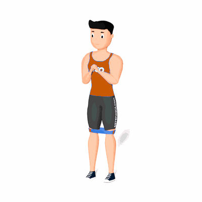

Agachamento com Faixa Elástica

O exercício tem como objetivo fortalecer os glúteos, quadríceps e isquiotibiais. E por conta de envolver o músculos abdutores do quadril, será trabalhado a posição e estabilidade corretas do joelho.
Ficha Técnica
Tipo: Funcional
Grupo Muscular: Perna
Aparelho: Nenhum
Músculos: Nenhum
Como realizar
- Coloque a faixa acima dos joelhos e adote uma postura atlética, com os pés afastados na largura dos ombros, o peito ereto e o abdômen contraído;
- Agache-se até que os joelhos fiquem dobrados em cerca de 90 graus;
- A partir do final do agachamento, levante-se um quarto da distância total e abaixe mais uma vez, como um mini agachamento dentro do agachamento, antes de se levantar totalmente para completar uma repetição;
- Levante os joelhos contra a faixa durante todo o movimento.
 RC STORE
RC STORE